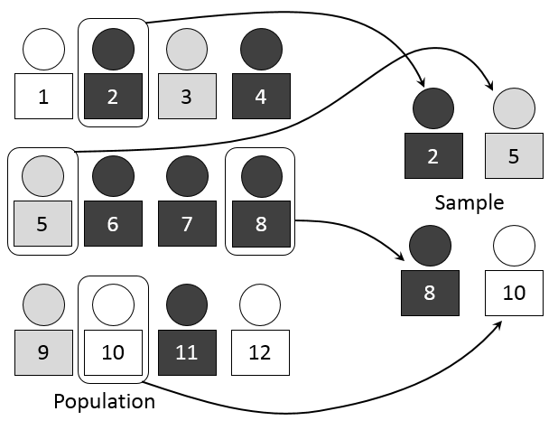
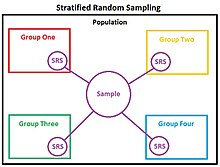
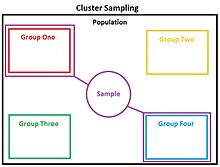

Random Sampling
What is Random sampling?
It is easy to misuse the word 'random'. You might say that you carried out your survey by questioning people 'at random', but what does it really mean to choose someone at random?
Random sampling means that members of a 'population' have equal chances of being selected.
To carry out this type of sampling, you will need to use a table of random numbers. Random numbers can also be generated using a calculator or computer. These can then be listed.A random sample is a sample that is chosen randomly. It could be more accurately called a randomly chosen sample. Random samples are used to avoid bias and other unwanted effects. Of course, it isn’t quite as simple as it seems: choosing a random sample isn’t as simple as just picking 100 people from 10,000 people. You have to be sure that your random sample is truly random!A simple random sample is often mentioned in elementary statistics classes, but it’s actually one of the least used techniques.

In theory, it’s easy to understand. However, in practice it’s tough to perform.
Technically, a simple random sample is a set of n objects in a population of N objects where all possible samples are equally likely to happen. Here’s a basic example of how to get a simple random sample: put 100 numbered bingo balls into a bowl (this is the population N). Select 10 balls from the bowl without looking (this is your sample n). Note that it’s important not to look as you could (unknowingly) bias the sample. While the “lottery bowl” method can work fine for smaller populations, in reality you’ll be dealing with much larger populations.
Stratified Sampling
What is stratified sampling?
Once the sample sizes for each layer have ben calculated random samples are then taken from each layer of the 'population'. It would be possible to number the pupils from 000 to 199, use 3-digit random numbers, and disregard all numbers from 200 to 999. However, this would be very time consuming, and you would waste more num bers than you use. A better way is to allocate the numbers 000 to 199, as before, then allot an equal number of random numbers to each pupil.Stratified sampling is not useful when the population cannot be exhaustively partitioned into disjoint subgroups. It would be a misapplication of the technique to make subgroups' sample sizes proportional to the amount of data available from the subgroups, rather than scaling sample sizes to subgroup sizes (or to their variances, if known to vary significantly -- e.g. by means of an F Test).
Data representing each subgroup are taken to be of equal importance if suspected variation among them warrants stratified sampling. If subgroup variances differ significantly and the data needs to be stratified by variance, it is not possible to simultaneously make each subgroup sample size proportional to subgroup size within the total population. For an efficient way to partition sampling resources among groups that vary in their means, variance and costs, see "optimum allocation". The problem of stratified sampling in the case of unknown class priors (ratio of subpopulations in the entire population) can have deleterious effect on the performance of any analysis on the dataset, e.g. classification.[3] In that regard, minimax sampling ratio can be used to make the dataset robust with respect to uncertainty in the underlying data generating process.[3]

Cluster Sampl ing
What is Cluster sampling?
The population within a cluster should ideally be as heterogeneous as possible, but there should be homogeneity between clusters. Each cluster should be a small-scale representation of the total population. The clusters should be mutually exclusive and collectively exhaustive. A random sampling technique is then used on any relevant clusters to choose which clusters to include in the study. In single-stage cluster sampling, all the elements from each of the selected clusters are sampled. In two-stage cluster sampling, a random sampling technique is applied to the elements from each of the selected clusters. The main difference between cluster sampling and stratified sampling is that in cluster sampling the cluster is treated as the sampling unit so sampling is done on a population of clusters (at least in the first stage). In stratified sampling, the sampling is done on elements within each strata. In stratified sampling, a random sample is drawn from each of the strata, whereas in cluster sampling only the selected clusters are sampled. A common motivation of cluster sampling is to reduce costs by increasing sampling efficiency. This contrasts with stratified sampling where the motivation is to increase precision.

Data representing each subgroup are taken to be of equal importance if suspected variation among them warrants stratified sampling. If subgroup variances differ significantly and the data needs to be stratified by variance, it is not possible to simultaneously make each subgroup sample size proportional to subgroup size within the total population. For an efficient way to partition sampling resources among groups that vary in their means, variance and costs, see "optimum allocation". The problem of stratified sampling in the case of unknown class priors (ratio of subpopulations in the entire population) can have deleterious effect on the performance of any analysis on the dataset, e.g. classification.[3] In that regard, minimax sampling ratio can be used to make the dataset robust with respect to uncertainty in the underlying data generating process.[3]
Multistage Sampling
What is Multistage sampling?
Data representing each subgroup are taken to be of equal importance if suspected variation among them warrants stratified sampling. If subgroup variances differ significantly and the data needs to be stratified by variance, it is not possible to simultaneously make each subgroup sample size proportional to subgroup size within the totalpopulation. For an efficient way to partition sampling resources among groups that vary in their means, variance and costs, see "optimum allocation". The problem of stratified sampling in the case of unknown class priors (ratio of subpopulations in the entire population) can have deleterious effect on the performance of any analysis on the dataset, e.g. classification.[3] In that regard, minimax sampling ratio can be used to make the dataset robust with respect to uncertainty in the underlying data generating process.[3]
Data representing each subgroup are taken to be of equal importance if suspected variation among them warrants stratified sampling. If subgroup variances differ significantly and the data needs to be stratified by variance, it is not possible to simultaneously make each subgroup sample size proportional to subgroup size within the total population. For an efficient way to partition sampling resources among groups that vary in their means, variance and costs, see "optimum allocation". The problem of stratified sampling in the case of unknown class priors (ratio of subpopulations in the entire population) can have deleterious effect on the performance of any analysis on the dataset, e.g. classification.[3] In that regard, minimax sampling ratio can be used to make the dataset robust with respect to uncertainty in the underlying data generating process.[3]
Watch this for a visual represnationof these sampling methods.